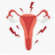

1. Cap Mefenamic Acid 250mg N=30 q6h
2. Cap Fefol N=30 daily
داروهای جایگزین:
Ibuprofen (Brufen) q6h
Tab: 200-400 mg
Susp: 100 mg/5ml
Soft el:200(Advil®)-400 mg (Gelofen®)
Diclofenac : q8h
Tab: 25/50/100mg E.C, cap: 100 mg
Supp: 50-10 mg
Amp: 75 mg/3ml,
در صورت عدم بهبودی خصوصا در خانمهایی که قصد بارداری ندارند:
Tab Contraceptive LD dail
1️⃣ بیماری های زنان و زایمان
✔️ حاملگی یا سقط
✔️ نئوپلاسم رحمی
✔️ آدنومیوز
✔️ اندومتریوز
✔️ EP
✔️ PID
✔️ کیست یا کنسر تخمدان
2️⃣ بیماری های جراحی
✔️ پریتونیت
✔️ آپاندیسیت
3️⃣ بیماری های داخلی
✔️ UTI
✔️ IBD
✔️ IBS
تصویری برای این نسخه موجود نیست.